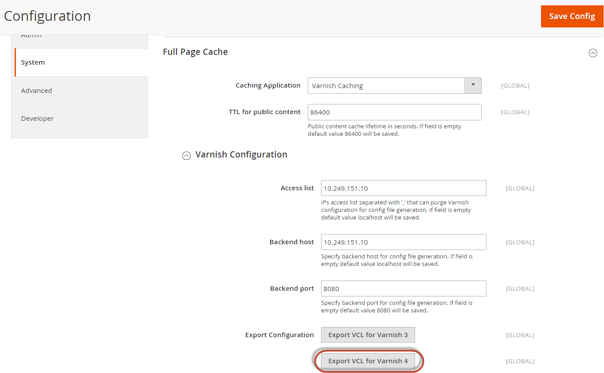

Magento2 is a PHP-based e-commerce platform. They have two editions:
Whichever the case, Ofcourse you want to get started with increasing the performance of your website!
So Lets get Started!
This article assumes that you have a running instance of Magento2 and that you have administrator rights for said instance, both at the OS and application level. We have tested this using Ubuntu LTS 16.04, Varnish Cache 4.1 and Magento2.
If need guidance with the installation of Magento then visit the Magento-Site
In case you also donot have Varnish, you will need to follow the instructional section on how to Install Varnish before we can continue.
Here we discuss how to configure your Magento2 behind Varnish. The Magento2 Admin states that built-in Application cache is not recommended for production use, but that does not mean that varnish is configured. Varnish needs to be installed and the configuration file suitably configured and deployed.
We assume that you have Magento2 installed and running on your backend servers and that your server is a Debian based Linux Server.
Visit the Magento 2 Admin page and go to:
-> Stores
-> Advanced
-> System
-> Full Page Cache
Here switch caching application to Varnish
This is what the Magento 2 Admin page should look like
Image courtesy: Magento Site
Place the file in a varnish folder for configuration (any safe place for you).
Now to check if your services are up and running:
``$ ps -e | grep 'apache2|varnish'``
If you recieve outputs like the ones below:
1143 ? 00:00:03 varnishd
1148 ? 00:00:17 varnishd
1366 ? 00:02:02 varnishlog
1591 ? 00:00:01 apache2
11743 ? 00:00:10 apache2
11744 ? 00:00:10 apache2
Congratulations! You have your services running on the backend.
Now we need to check the Magento2 frontend::
As you may have already noticed above, there is a varnishlog process running as well.
sudo systemctl restart varnish.service
sudo systemctl restart apache2.service
Varnish doesnot cache cookies or its headers. But some cookies are marked as safe by the magento site. Therefore it is recommended to remove or ignore these cookies so that varnish can cache anything.
An example like the following will help to unset/remove unwanted cookies.
Update your default.vcl with this code or a similar code of your choice.
Under the vcl_recv add the following code.
warning: Make sure to add the code below the default code given for vcl_recv
sub vcl_recv {
if (req.http.cookie) {
set req.http.cookie = ";" + req.http.cookie;
set req.http.cookie = regsuball(req.http.cookie, "; +", ";");
set req.http.cookie = regsuball(req.http.cookie, ";(COOKIE1|COOKIE2|COOKIE3)=", "; \1=");
set req.http.cookie = regsuball(req.http.cookie, ";[^ ][^;]*", "");
set req.http.cookie = regsuball(req.http.cookie, "^[; ]+|[; ]+$", "");
if (req.http.cookie == "") {
remove req.http.cookie;
}
}
Not all URLs should be cached. Especially not in sites that deal with personal information such as credit card information.
if (req.url ~ "magento_admin|magento_login") {
return (pass);
}
There is a subroutine called vcl_fetch which is by default set to 120 seconds as can be seen. You can extend this caching value by
sub vcl_fetch {
set beresp.ttl = 5s;
}
This sets the ttl to 5 seconds, thus varnish picks up changes every 5sec. Add this subroutine right below the backend default.
However, there is a downside to short TTL values that is they increase the load not only in the backend servers but also the front end servers. Of course this gives you a better control over your cache, but it also increases overheads such as network traffic, response times becomes slower thus diminishing the whole purpose of varnish.
So decreasing TTL values is not a good solution for high traffic based servers. Varnish has a better solution for that.
Varnish creates a TTL value for every object in the cache. A most effective way of increasing a websites hit ratio is to increase the time-to-live (ttl) of the objects.
If you are interested in Varnish, you can always give Varnish Plus a go. There’s a free trial available. You can capture real-time traffic statistics, create a paywall for premium content, simultaneously work on administration across all Varnish servers, record relationships between web pages for easy content maintenance, detect devices used for browsing, and accelerate APIs.
Check out the links below to take your Varnish-Magento site further.
You can always refer to the Configure and Use Varnish at the Magento site.
To see the guide on installing and configuring Magento with Varnish on webserver, please look at here.
If you are interested in trying out an installation try downloading Marko’s Vagrant Box marko_magento2github. His installation used niginx with varnish and magento.You can also read more about that at Marko’s blogpost about Placing Magento2 behind Varnish marko_magento2post.
{kind=link}